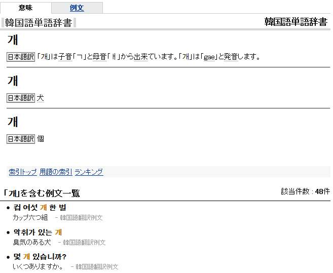
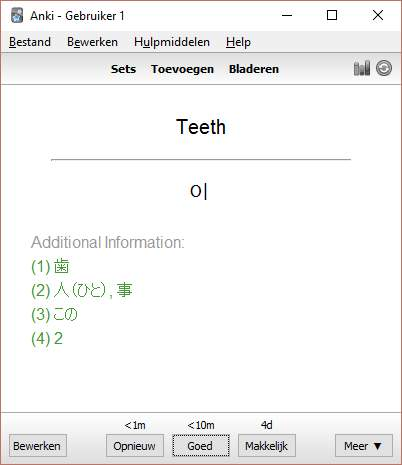

I have recently started studying Korean as part of the minor I took up at my university. While browsing the internet for helpful resources I found that, like us, a remarkable amount of students of the Korean language have knowledge of Japanese and/or study both simultaneously.
As anyone browsing my blog might have guessed, I’m pretty fond of using Anki for assisting in vocab acquisition, and thus use it for Korean vocabulary as well, using both existing sets and my own based on our textbooks.2 Having a broad base in Japanese, I thought it would be more efficient having a link between the two languages in my flashcards. In order to assist myself and other learners of both Japanese and Korean, I wrote an Anki add-on that adds Japanese translations of Korean expressions.
Similar to my previous Anki posts, this blog post serves as a brief tutorial on setting up the add-on and adding Japanese translations to our cards. We’ll install an Anki add-on, alter our card-layout to display the Japanese expressions in a fashionable manner, and finally bulk-edit our existing cards to actually add them.
Anki Korean-Japanese add-on
The add-on scrapes Weblio’s online Korean-Japanese dictionary for all translations aside from the usually present character decomposition. The expression 개 (transcribed as gae3 or kae4 and means either dog or is used as a particular counter), for example, results in the following page:

(If I feel like it, or if there’s some demand for it, I’ll expand the add-on to scrape the example sentences as seen above as well)
Download
The Japanese Definitions for Korean Vocabulary add-on has a page on Ankiweb’s plug-in page, but as usual we’ll install the plug-in using the Desktop Anki application. Go to Tools → Add-ons → Browse & Install, and copy-paste 553926167 in the pop-up dialog. Restart the application to complete the installation.
Set-up
The add-on expects two things:
- The field containing your Korean expression should be called:
Korean - The note-type should contain a field called
Japanesewhich will contain the Japanese translations
(Both names can be edited in the JapaneseDefinitionsKoreanVoc.py file by opening it with a text-editor and changing the names listed in the beginning. The file can be found on the Anki’s add-on folder on your computer (e.g. C:\Users\your_username\Documents\Anki\addons))
To create a new field Japanese, open the desktop Anki application and press Ctrl+Shift+N (or click Tools → Manage Note Types) to enter the note-type management screen. Select the note-type of the cards you’d like to contain example sentences and click fields.
On the next screen, click add and call the field Japanese. Now close this screen. On the previous note-type management screen, click cards. We’ll edit our lay-out and display the new field in our cards.
Anki Note Lay-out
(this is a suggested Anki layout as seen in the screenshot below. Feel free to skip if you’d like to do this yourself.)
Lay-out
Add the following CSS code to the shared style screen of your note’s card-type template.
1 2 | |
Templates
Add the following code to the bottom of all your different card templates’ back template.
1 2 3 4 5 6 | |
Bulk-edit
Open Anki’s browser (by pressing B or clicking Browse from the main window). The left of this browser has an overview of all your different sets and tags. Select the deck or tag containing the cards you’d like to edit. Press Ctrl+A to select all of those and click Edit → Regenerate JK Expression. It will crawl the internet for each new definition and scrape the HTML so if you have thousands of cards this might take an hour or two.
Result

-
Screenshot of JapaneseDefinitionsKoreanVoc.py code from Sublime Text’s editor. ↩
-
Cho, Young-mee Yu, red. 2010. Integrated Korean: Beginning. 2nd ed. KLEAR Textbooks in Korean Language. Honolulu: University of Hawaii Press ↩
-
According to the official Korean Revised Romanization ↩
-
According to the widely used McCune-Reischauer transliteration system, which tries not to transliterate but rather represent the phonetic pronunciation. ↩